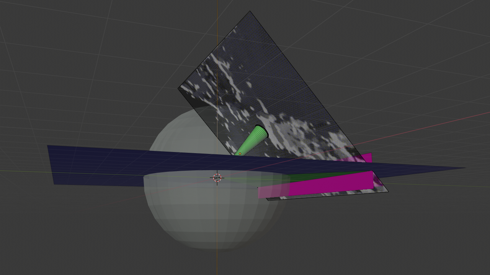
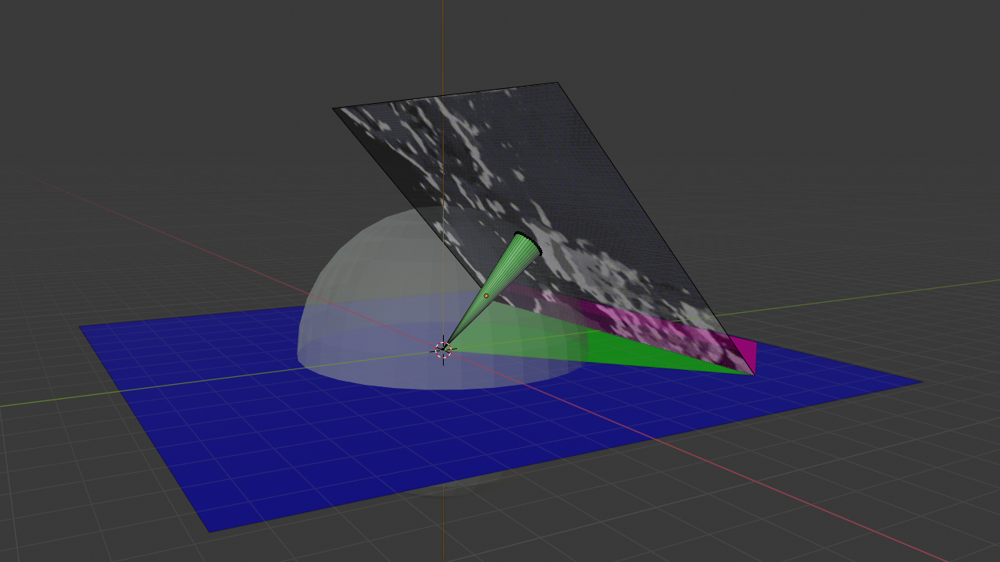
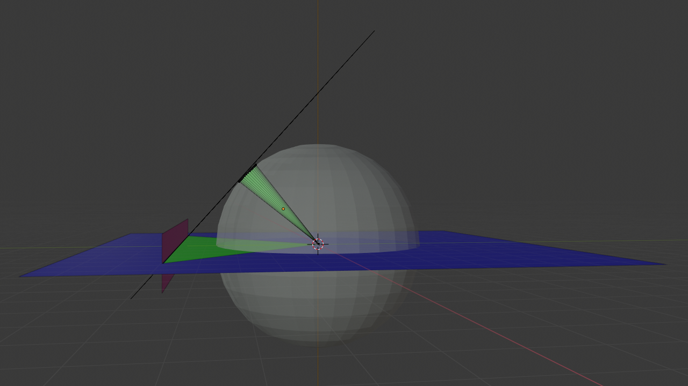

Robotic Vision
0. Setup sensor streams to receive readings for 3D position, 3D Euler angles, and a front disparity image.
1. Process the disparity image with a median filter to remove noise.
2. Warp the disparity image using a 3D-rototranslational model, to account for the quadrotor's elevation, pitch and roll.
|

|

|

|

|
3. The disparity map rows are now parallel to the grid plane. Select only a small number of them, close to the intersection.
4. Max pool vertically from the selected rows, in order to "collapse" them into a 1D array of depths.
5. Project the quadrotor's field of view on the grid plane, and use the 1D array of depths to localize any obstacles within it.
6. Raytrace the quadrotor's field of view projection, to update the occupancy grid.